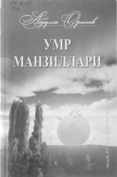

UMAbdulla Oripovning chuqur falsafiy va hayotiy mavzulardagi she'rlari to'plami.
Ushbu kitob O'zbekiston Qahramoni, Xalq shoiri Абдулла Ориповning so'nggi yillarda yozilgan she'rlari, she'riy traktrati va g'azallarini o'z ichiga oladi. To'plamda globallashuv jarayonining inson ruhiyati va tafakkuriga ta'siri, ma'naviy qadriyatlar hamda hayotiy falsafalar poetik tarzda tahlil qilingan.